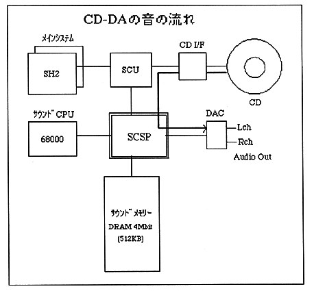

Return to previous page ｜ Return to menu ｜ Go to next page
3.4 CD-DA playback
3.4.1 CD-DA playback mechanism
CD-DA playback is a method that directly outputs the audio data of the CD audio track in hardware. This is the same as the principle of a tape recorder, and the recorded voice is played back as it is. Since the audio data read from the CD is automatically flowed into SCSP, audio output will begin just by setting the CD-DA level of SCSP.

3.4.2 CD-DA playback method
CD-DA playback is performed by reading audio data from the CD drive and setting audio output from SCSP.
To read audio data, use the CDC library of the system library. Audio data can be read by calling the following two functions. For details on the CDC library, see the CDC library user's manual.
[CDC library functions]
1. CDC_CdInit: Initializes the CD drive.
2. CDC_CdPlay: Plays a CD.
CD-DA playback is also possible using a file system library.
Use the sound control command “CD-DA Level (80h)” and “CD-DA Pan (81h)” to set the audio output from SCSP. For details on how to issue commands and their details, refer to “Chapter 4 Commands and Status”.
Return to previous page ｜ Return to menu ｜ Go to next page